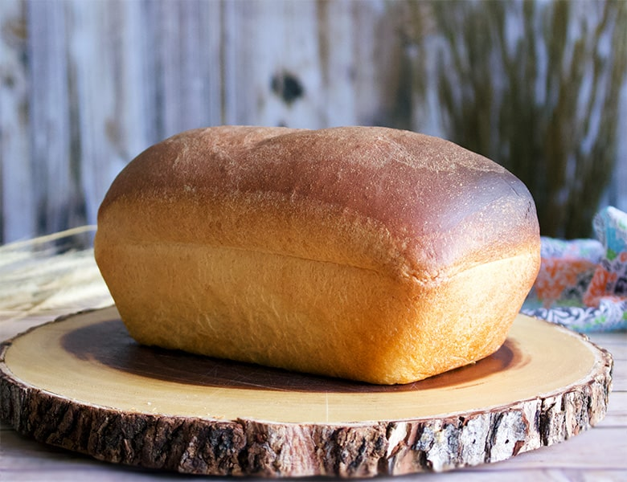

Back to: All Recipes
Grocery Store White Bread

Description
This easy to make grocery store white bread recipe
will help you save money on expensive supermarket bread loafs
while also tasting great!
Ingredients
- 3/4 cup of whole milk
- 1/2 cup of filtered water
- 2 1/2 tsp of yeast
- 3 cups of bread flour + more for dusting
- 1/2 tsp of fine grain sea salt
-
- 1 tbsp of sugar
- 3 tbsp of unsalted butter
Steps
- Step 1: Combine Milk and Water. Heat in microwave on high
for approximately 1 minute.
- Step 2: Add yeast to liquid mixture, whisk until
it has a light foamy consistency. Cover with plastic
wrap and let sit for 10 minutes.
- Step 3: Combine flour, salt, and sugar, whisk until
thoroughly combined. Add yeast mixture and stir/turnover with a spatula
for 3-4 minutes.
- Step 4: Add butter to the mixture 1 tbsp at a time and mix for
30 seconds each until you have a smooth dough. Cover with plastic wrap
and let sit for 10 minutes.
- Step 5: Move dough ball to an unfloured surface and gently
shape it into a smooth ball. Place ball back into bowl.
Cover with plastic wrap or damp towel and let the dough rise
for 2 1/2 to 3 hours.